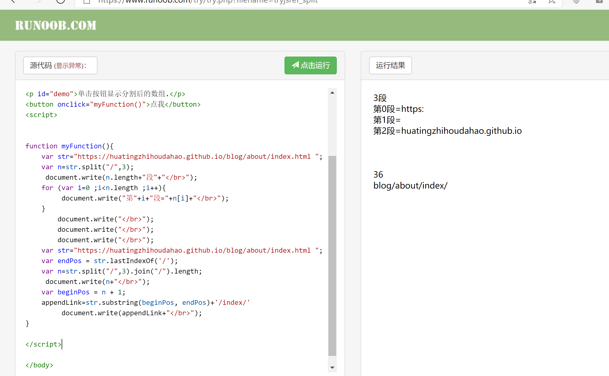

鉴于我的bug体质这里可能有你需要的大部分hexo主题相关解决方案
BUG
tips.改完得hexo clean g d 来一趟上传上去（如果搞完了还是没好，可能是网太烂，换一个网8） 如果改了module的js之类的，务必要clean！！！
1.本地显示正常，上传的网站css渲染不出来or一片空白
改_config, url: https://用户名.github.io/rep名 root:/rep名/
url: https://huatingzhihoudahao.github.io/blog/
root: /blog/
然后自己的网站名就成了https://huatingzhihoudahao.github.io/blog/
我是从后面9来的，插图片更换插件代码，没能成功，改了url为https://huatingzhihoudahao.github.io才成功。。
2.文件在上传的网站上无显示
注意的deploy的branch和github pages的是否一致，一开始我用的master，github的仓库里倒是有了，但是网站显示的是gh。
branch: gh-pages
以及注意主题选的啥玩意。。。（我选的是github pages推的merlot，是个 jekyll 的主题。。根本不是hexo的，由于那个主题实在是好看我又跑去搭jekyll，结果有个什么玩意又要0.3.6的又要0.4.0的没整好，不了了之。。换回hexo了，hexo还是简单点…）
3.换主题之后上传的网站一片空白
看自己主题的作者的md，以及issue (我下的是据作者说有lofter那味儿的snark，有个搜索功能，需要自己在yml里添加一下)
search:
path: search.xml
field: post
4.上传网站主题的头像是本地图片，然而显示不出来
这招是乐哥教的，按住fn 和f12，查看源码，点左上角第一个的框框，即选中一个元素进行检查，然后点到没出来的图片上，可以看到对应的代码位置。我的是这个
<img class="nofancybox" src="/img/profile.jpg" width="128" height="128">
把斜杠去掉，（本地好像是得加一个空格）
<img class="nofancybox" src="img/profile.jpg" width="128" height="128">
不过这些改了没用，只是当前页面有用，再打开一回还是原来那样，所以去改主题源码吧，一般在主题的layout 的_partial底下，挺多的，抽奖找文件吧？我的是在nav-menu，斜杠删了就行
a(class="hdimg img" href="/")
img(src="img/profile.jpg" class="nofancybox" width="128" height="128")
h1.ttl
a(href="/")= config.title
src=”img/profile.jpg” 这种路径貌似系统可以自动补https://huatingzhihoubalabalabala之类的前缀？
5.上传网站主题的background.png加载不出来
同4理，看控制台 ，底下有几个error 锁定一下， 我的在style.scss，感觉把路径改对就行，我改的是绝对路径（记得改源码里的）
body {
background-image: url(https://github.com/huatingzhihoudahao/blog/blob/gh-pages/img/backgroud.png);
其实我的显示不出来也看不出来，因为默认就是藏蓝色，本来想换成米斯达的，但是好像这样和头像更搭一点。
淦，跨源读取阻止(CORB)功能阻止了 MIME 类型为 text/html 的跨源响应。。。。
我发现我当时截的url咋莫名其妙带了个blob，于是返回了上一级，然后拼起来，用了这个
background-image: url(https://github.com/huatingzhihoudahao/blog/tree/gh-pages/img/backgroud.png);
nice~ 好使了 没报错了
(我是后面来的 这里好了个锤子，github.com和huatingzhoudahao.github.io （这是不放域名只放图片的时候，终端显示的读取路径） 算是主域名不同？ 貌似是跨域的，我点开这个io，就是在这个io的html下，然后又设定去https://github.com/huatingzhihoudahaobalabala这边取，应该就是跨域吧。跨域指的是浏览器不能执行其他网站的脚本。它是由浏览器的同源策略造成的，是浏览器施加的安全限制。所谓同源是指，域名，协议，端口均相同)。 至于关于blob什么意思为什么会出现加不加有无影响就没研究了，反正加不加都说我跨源。
举例
http://www.123.com/index.html 调用 http://www.123.com/server.php （非跨域）
http://www.123.com/index.html 调用 http://www.456.com/server.php （主域名不同:123/456，跨域）
http://abc.123.com/index.html 调用 http://def.123.com/server.php （子域名不同:abc/def，跨域）
http://www.123.com:8080/index.html 调用 http://www.123.com:8081/server.php （端口不同:8080/8081，跨域）
http://www.123.com/index.html 调用 https://www.123.com/server.php （协议不同:http/https，跨域）
请注意：localhost和127.0.0.1虽然都指向本机，但也属于跨域。
————————————————
版权声明：本文为CSDN博主「ouxiaoxian」的原创文章，遵循CC 4.0 BY-SA版权协议，转载请附上原文出处链接及本声明。
原文链接：https://blog.csdn.net/ouxiaoxian/article/details/89332027
这个我已经不管了。。。就这样吧懒得改了。。反正看不出有问题。。
现在的我是从第六个问题来的！！解决了！！
background-image: url(https://huatingzhihoudahao.github.io/blog/img/backgroud.png);
我实在是太蠢了。。。。。
6.上传网站主题的头像，主页面显示出来了，点进博客里面就显示不出来
同4，5理由，控制台锁定error，发现图片位置是
https://huatingzhihoudahao.github.io/blog/2021/04/30/hello-world/img/profile.jpg
打开确实是没有的，我在想底下是最后生成的index.html
</script><script type="text/javascript" src="/blog/js/ready.js" async></script><link rel="stylesheet" href="//cdn.jsdelivr.net/gh/fancyapps/fancybox@3.5.7/dist/jquery.fancybox.min.css"><body class="night"><div class="mobile-head" id="mobile-head"><div class="navbar-icon"><span></span><span></span><span></span></div><div class="navbar-title"><a href="/">LITREILY</a></div><div class="navbar-search"><!--= show a circle here--></div></div><div class="h-wrapper" id="menu"><nav class="h-head box"><div class="m-hdimg"><a class="hdimg img" href="/"><img class="nofancybox" src="img/profile.jpg"
在控制台报错是GET https://huatingzhihoudahao.github.io/blog/2021/04/30/hello-world/img/profile.jpg 404 或许是因为src=”img/profile.jpg”的写法是相对路径？，
{kind=link}
于是我把
<img class="nofancybox" src="/img/profile.jpg" width="128" height="128">
改成
img(src="https://github.com/huatingzhihoudahao/blog/tree/gh-pages/img/profile.jpg"
失败了。。控制台虽然没错误了，但是根本没显示出来，而且控制台报了5以及和5一样的错。。。阻止跨源响应。。。。让我怀疑我的5是不是自己看错了其实根本没解决。。
跨源读取阻止(CORB)功能阻止了 MIME 类型为 text/html 的跨源响应 https://github.com/huatingzhihoudahao/blog/blob/gh-pages/img/profile.jpg。有关详细信息，请参阅 https://www.chromestatus.com/feature/5629709824032768。
style.css:1 跨源读取阻止(CORB)功能阻止了 MIME 类型为 text/html 的跨源响应 https://github.com/huatingzhihoudahao/blog/blob/gh-pages/img/backgroud.png。有关详细信息，请参阅 https://www.chromestatus.com/feature/562970982403278
我改成
img(src="Access-Control-Allow-Origin:https://github.com/huatingzhihoudahao/blog/tree/gh-pages/img/profile.jpg"
也不行，说我
Failed to load resource: net::ERR_UNKNOWN_URL_SCHEME
估计是写法有问题，改成
img(src="Access-Control-Allow-Origin:github.com/huatingzhihoudahao/blog/tree/gh-pages/img/profile.jpg"
一样的net::ERR_UNKNOWN_URL_SCHEME.于是加了个标签
img(crossOrigin="Anonymous"
还是不行。。
我又全部退回去，返回到一开始的删掉斜杠
<img class="nofancybox" src="img/profile.jpg" width="128" height="128">
img的src规则是这样的，如果是http://balablabal/img/xxx.jpg 这种系统是不会做什么的 读就直接读的这个url
但如果写img/profile.jpg，他就会默认把前面补上 当前页面的头 比如https://huatingzhihoudahao.github.io/blog/archives/img/profile.jpg 补成这个样子（这个是我点击归档出来的路径） 是没有的 所以会显示不出来
{kind=link}
如果是主页面,会补成这个样子https://huatingzhihoudahao.github.io/blog/img/profile.jpg ，是有的，所以可以显示。如果是归档啊 关于啊 之类的 可以自己在本地搭建hexo的地方（比如我是在myblog部署的git）找source，找about啊归档啊标签啊之类的（hexo new 出来的文件夹） ，在里面新建一个img文件夹把图片扔进去。上传之后 可以保证在io上点进归档是可以显示头像的。但是md文档的点进去出不了头像怎么解决还不知道。
{kind=link}
!!!我知道怎么解决这些问题了！！统统用https://huatingzhihoudahao.github.io/blog/img/profile.jpg！！ 为什么我想绝对路径的时候只想到到github.com/balaba那个地方呢！直接io/balabala 不就行了！
{kind=link}
n！i！c！e！！！（虽然之前的我实在是太傻了。。。怎么就脑子没转过弯来）
7.根据主题作者提示安装npm install hexo-renderer-pug –save的问题
7.1出现18 packages are looking for funding run npm fund for details
其实就是求打赏啦，可以run npm fund看链接点击去打赏，不想打赏就
npm install hexo-renderer-pug --save --no-fund
7.2出现found 1 high severity vulnerability： run npm audit fix to fix them, or npm audit for details
在431扫描包中找到1个高度严重性漏洞1漏洞需要手动审查。有关详细信息，请参阅完整报告。
npm audit --json
查看详细报告
"overview": "### Impact\n\nIn affected versions of `pug` and `pug-code-gen`, if a remote attacker was able to control the `pretty` option of the pug compiler, e.g. if you spread a user provided object such as the query parameters of a request into the pug template inputs, it was possible for them to achieve remote code execution on the node.js backend.\n\n### Patches\n\nUpgrade to `pug@3.0.1` or `pug-code-gen@3.0.2` or `pug-code-gen@2.0.3`, which correctly sanitise the parameter.\n\n### Workarounds\n\nIf there is no way for un-trusted input to be passed to pug as the `pretty` option, e.g. if you compile templates in advance before applying user input to them, you do not need to upgrade.",
"recommendation": "Upgrade `pug` to version 3.0.1",
"references": "- [GitHub Advisory](https://github.com/advisories/GHSA-p493-635q-r6gr)\n- [CVE](https://cve.mitre.org/cgi-bin/cvename.cgi?name=CVE-2021-21353)\n- [Similar advisory for `pug-code-gen`](https://www.npmjs.com/advisories/1644)",
是pug要升级（直接npm audit fix –force没用会说要手动升级）所以去references网站下载。。
网站让我直接npm install pug 版本是3.0.2 但是最后还是给我报高危漏洞要升级。。
不管了。。。。
因为我发现照着作者说的插件安了一通之后 好像没有报search xml之类的错了
以及发现有人说npm安装的时候用cmd安装，，我用的是git bash。然而都一样都会报这个问题
8.点击头像或者about之类的不能像原主题显示的那样跳转到主页面而是404
我的正确打开路径是https://huatingzhihoudahao.github.io/blog/archives/
点击归档之类的标签就是https://huatingzhihoudahao.github.io/blog/archives/
点击头像就是https://huatingzhihoudahao.github.io/blog/是404
乐哥应该在js的脚本里设的？我找了一圈没找到。之后又用4，5的方法，找到了是 a href=“ ”这类的东西，前面会被自动加上https://huatingzhihoudahao.github.io比如我写a href=“/blog/tags/“,就会跳转到https://huatingzhihoudahao.github.io/blog/tags/
于是我到nav-menu的文件里把
a(class="hdimg img" href="/") 和 a(href="/")= config.title
改成
a(class="hdimg img" href="/blog/") 和 a(href="/blog/")= config.title
成功
至于about和分类或者tags点进去空的，然后对应的url又不像是错的
点进去404会告诉我
If this is your site, make sure that the filename case matches the URL.
For root URLs (like http://example.com/) you must provide an index.html file.
那是因为根本没有hexo new，以及没有hexo d github上就没有index.html 所以new一下上传就行
hexo new page tags
9.插图片到文本的问题
https://www.jianshu.com/p/f72aaad7b852
https://blog.csdn.net/xjm850552586/article/details/84101345
我是5/2的我，我又回来了，这玩意解析的路径在about是对的，在post那解析的不对。。应该解析成2021/4/30balabalba它解析的是.io 欺负我不会js呗。
我看了源码和网络改进版，他们一个能出about的一个能出post的
https://blog.csdn.net/xjm850552586/article/details/84101345
这个不能给about加index前缀
原版的about可以加 但是post的解析不对
这是逼着我读js啊
改成这样就好了
var version = String(hexo.version).split('.');
hexo.extend.filter.register('after_post_render', function(data){
var config = hexo.config;
if(config.post_asset_folder){
var link = data.permalink;
if(version.length > 0 && Number(version[0]) == 3)
var beginPos = getPosition(link, '/', 1) + 1;
else
var beginPos = getPosition(link, '/', 3) + 1;
var appendLink = '';
// In hexo 3.1.1, the permalink of "about" page is like ".../about/index.html".
// if not with index.html endpos = link.lastIndexOf('.') + 1 support hexo-abbrlink
if(/.*\/index\.html$/.test(link)) {
// when permalink is end with index.html, for example 2019/02/20/xxtitle/index.html
// image in xxtitle/ will go to xxtitle/index/
appendLink = 'index/';
var endPos = link.lastIndexOf('/');
}
else {
var endPos = link.lastIndexOf('/') + 1;
}
link = link.substring(beginPos, endPos) + '/' + appendLink;
我是从13回来的我，这个要求config的url不带root的blog 但是这样的话 转载注明出处那里（author）会点不带root的blog的url去 也就是404了，所以为了把转载注明出处那里不搞成404，我把url改了，于是图片显示就都有问题了。也不记得具体哪行代码导致问题。。反正直接删了config.root那一项不好使。具体看13吧。。（代码都是hexo-asset-image插件里的js）
10.主题段落间距和主页面标题高度显示行数的问题
控制台看元素，在样式里勾选和不勾选以及更改代码，可以看到效果，一般标的有源码 ，我的在style.css。下面这个是段落间距
.p-content {
h2,h3,h4 {
// margin: 1.6em 0 0.6em;
margin: 6em 0 0.6em;
max-width是页面文章标题的宽度
.p-desc {
position: relative;
top: 0;
left: $art-left-offset;
width: 100%;
max-width: 1000px;
font-size: 是在页面文章标题显示的字体大小
h1 {
font-size: 20px;
line-height: 1.2;
margin: 0 0 36px;
}
下面这个是显示行数
.p-desc {
position: relative;
top: 0;
left: $art-left-offset;
width: 100%;
max-width: $art-width;
text-align: left;
padding: $art-padding;
margin-bottom: 20px;
background: $dark-float;
box-shadow: 0 0 40px rgba(0,0,0,0.5);
display: -webkit-box;
-webkit-line-clamp: 1;
-webkit-box-orient: vertical;
overflow: hidden
}
.l-post article.p-art {
position: relative;
top: 0;
left: $art-left-offset;
width: 100%;
max-width: $art-width;
text-align: left;
padding: $art-padding;
margin-bottom: 20px;
background: $dark-float;
box-shadow: 0 0 40px rgba(0,0,0,0.5);
}
具体看我的回答https://www.zhihu.com/question/51632133/answer/1864334646
12.网页吸色
控制台太方便了！！以后看到好看的颜色直接开控制台在找代码吸色！在#前面有框框可以打开
color: #b9549d;
13.为了调img显示开始现学js..
不管怎么样 反正这个在我url不带blog root是blog的情况下 终于可以既在about里显示又在post的md里显示了。。。。我吐了。。。我这个写法就是
默认的没改动过的src是xxx.jpg
后来把src赋值成index+src（index 就是appendLink 就是’index/‘;）
如果当前页面是about（即下面有index文件夹且有index.xml） 就在src前面赋一个’index/‘；
这样src就是’index/xxx.jpg’ 前面没有/ 这种是相对路径 会被网页自动添加当前页面头
也就是会被添加成我们想要的locahost:4000 /blog/about/ + index+xx.jpg
如果src是 ‘/index/xxx.jpg’,
就不会被添加，只会结合locahost:4000 成 locahost:4000 /index+xx.jpg
如果src是about/index/xxx.jpg
就会被添加结合成locahost:4000 /blog/about/ + about/index+xx.jpg
如果src是blog/about/index/xxx.jpg
就会被添加结合成locahost:4000 /blog/about/ + blog/about/index+xx.jpg
反正就是前面不能带/ 不然就不能补全。 ps(hexo s 可以编译输出 用console.info)
'use strict';
var cheerio = require('cheerio');
// http://stackoverflow.com/questions/14480345/how-to-get-the-nth-occurrence-in-a-string
function getPosition(str, m, i) {
return str.split(m, i).join(m).length;
}
//split这个函数是在str查找m，找到就切分 分成i段，所以会找i-1个 m
var version = String(hexo.version).split('.');
hexo.extend.filter.register('after_post_render', function(data){
var config = hexo.config;
if(config.post_asset_folder){
var link = data.permalink;
// if(version.length > 0 && Number(version[0]) == 3)
// var beginPos = getPosition(link, '/', 1) + 1;
// else
// var beginPos = getPosition(link, '/', 3) + 1;
var beginPos = getPosition(link, '/', 3) + 1;
var appendLink = '';
// In hexo 3.1.1, the permalink of "about" page is like ".../about/index.html".
// if not with index.html endpos = link.lastIndexOf('.') + 1 support hexo-abbrlink
// when permalink is end with index.html, for example 2019/02/20/xxtitle/index.html
// image in xxtitle/ will go to xxtitle/index/
var endPos = link.lastIndexOf('/');
//public int lastIndexOf(String str): 返回指定子字符串在此字符串中最右边出现处的索引，如果此字符串中没有这样的字符，则返回 -1。
//比如这里本来是https://huatingzhihoudahao.github.io/blog/about/index.html 是截止到about
if(/.*\/index\.html$/.test(link)) {
// when permalink is end with index.html, for example 2019/02/20/xxtitle/index.html
// image in xxtitle/ will go to xxtitle/index/
// appendLink =link.substring(beginPos, endPos)+ '/index/';
appendLink ='index/';
//appendLink ='/index/';
}
else {
}
//link = link.substring(beginPos, endPos) + '/' + appendLink;
link = appendLink;
var toprocess = ['excerpt', 'more', 'content'];
for(var i = 0; i < toprocess.length; i++)
{
var key = toprocess[i];
var $ = cheerio.load(data[key], {
ignoreWhitespace: false,
xmlMode: false,
lowerCaseTags: false,
decodeEntities: false
});
$('img').each
(function()
{
if ($(this).attr('src'))//这个意思是返回这个节点（此处为img）的src属性的值
//src就是xxx.jpg
//$(this).attr(key); 获取节点属性名的值，相当于getAttribute(key)方法
{
// For windows style path, we replace '\' to '/'.
var src = $(this).attr('src').replace('\\', '/'); //var是申明变量
if(!/http[s]*.*|\/\/.*/.test(src) &&!/^\s*\//.test(src))
{
// For "about" page, the first part of "src" can't be removed.
// In addition, to support multi-level local directory.
var linkArray = link.split('/').filter(function(elem)
//split不改变原本link的值
{
return elem != '';
}
);
// var srcArray = src.split('/').filter(function(elem)
// {
// return elem != '' && elem != '.';
// }
// );
// if(srcArray.length > 1)
// srcArray.shift();
// //shift() 方法用于把数组的第一个元素从其中删除，并返回第一个元素的值。
// // src = srcArray;
// src = srcArray.join('/');
// $(this).attr('src', src);
console.info&&console.info(link+"</br>");
$(this).attr('src', link+src);
//$(this).attr(key, value); 设置节点属性的值，相当于setAttribute(key,value)方法
console.info&&console.info("update link as:-->"+link + src);
}
}
else
{
console.info&&console.info("no src attr, skipped...");
console.info&&console.info($(this));
}
}
);
data[key] = $.html();
}
}
});
调试的过程中学了一点点点点js

版权声明：本博客所有文章除特殊声明外，均采用 CC BY-NC 4.0 许可协议。转载请注明出处 做秧歌star的钢琴